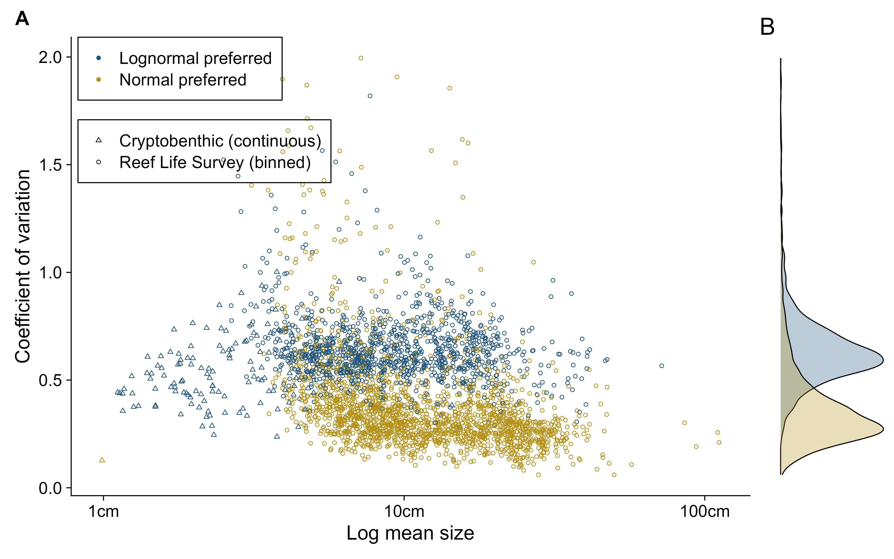
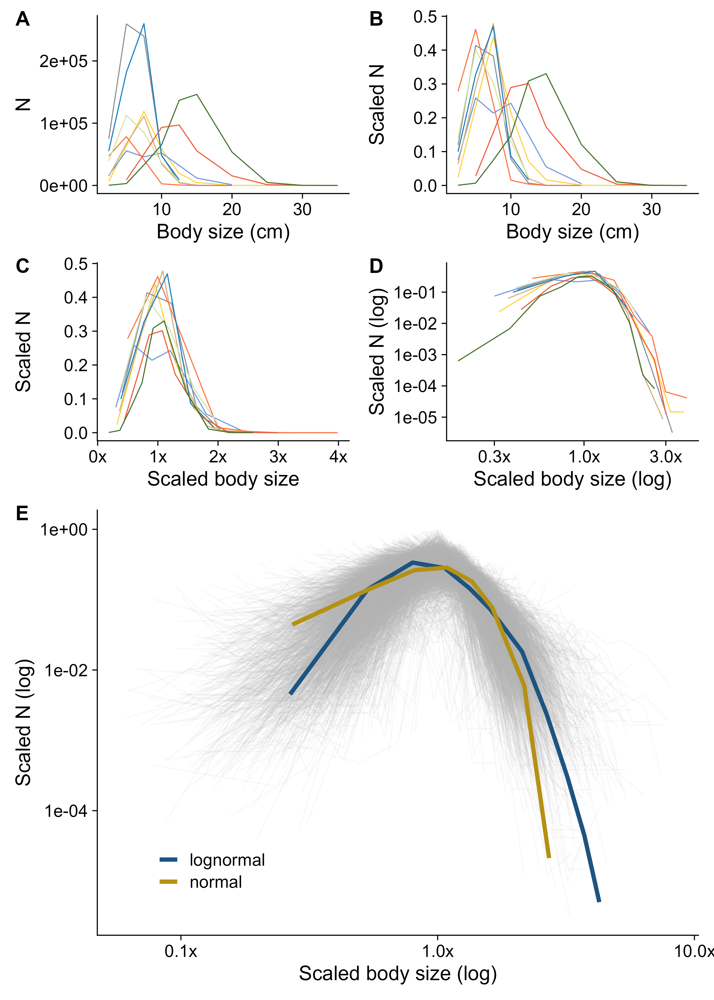

Fish intraspecies body size distributions.
Freddie J. Heather ![]()
Shane A. Richards
Asta Audzijonyte
Abstract goes here
1 Background
Body size is a key trait in determining how organisms interact with their environment, this is particularly true for marine organisms, where body size is a strong predictor of trophic position1, growth rate, and predation mortality2. Giometto et al.3, using the spherical diameter of unicellular protists under experimental lab conditions, identified that the mean body size of a species, was sufficient to describe the entire body size distribution. The authors conjectured that this may hold for multicellular organisms. Here, we test this conjecture using 15 million+ individuals from 1064 fish species, from reef ecosystems globally.
Estimations of unexpoited biomass are necessary for the stock-assessments, yet these are often based on expert advice, which may lead to subjective or biased estimates of exploitation levels4,5. Among fisheries scientists, there appears to consensus on the body size distribution of an unexploited fish population, partly due to the majority of body size data coming from fishery-dependant sources with size selective biases (e.g., fishing net mesh size). Many modelling approaches assume the abundance of unexploited fish populations to monotonically decline with body size (e.g., exponential distribution)6,7, whilst others
Here we test the likelihood of each of these distributions using two global scale body size distributions, spanning millimetre long cryptobenthic species, to metre long shark species. We use a combination of two data collection methods, an underwater survey method which involves body size estimation into pre-defined body size classes, and the second involving a destructive method allowing the continuous body size distribution to be calculated.
2 Results & discussion
Our observations from 607 unique fish species support the conjecture3 that a single body size metric (e.g. mean body size) is sufficient to appoximate the body size distribution of fish species. We show that for the coefficient of variation of both the normal and lognormal distributions, 95% of estimates fell within the range of 0.16 to 1.57, with a median coefficient of variation of 0.45 (Figure 1). Only one of the 139 cryptobenthic population body size distrbutions (continuous data) was better described by a normal distribution than a lognormal distribution (triangles in Figure 1 A), this population had also the smallest mean size of any population. On the other hand, 36% (n = 1100 populations) of the 3089 binned body size distributions from Reef Life Survey populations were better described by a lognormal distribution, over a normal distribution (64%, n = 2989 populations). The coefficient of variation of body size distributions that were better described by lognormal distributions were higher (median cov = 0.61) than the those better described by a normal distribution ((median cov = 0.32, Figure 1 B).


3 Methods
3.1 Body size data sources
Fish body size data were obtained through two sources: 1) visual census data from Reef Life Survey (RLS; filtered to Australian populations only, 12M+ individuals, 497 species, binned body size estimates)8, and 2) lethal sampling of Cryptobenthic reef fishes (CBF; global spatial coverage, 8K+ individuals, 127 species, continuous body size measurements to the nearest 0.1mm)9.
RLS surveys involve an underwater visual census method along 50m transect line, with a diver searching 5m either side of the transect line, the body size of the fish is estimated to the nearest body size bin (2.5, 5, 7.5, 10, 15, 20, 25, 30, …, 400cm).
The second data source was from field collections using enclosed clove-oil stations at six reefs; Moorea, GoO, AG, Lizard Island, Panama, and Belize. Reef outcrops are selected, measured, and covered with a bell-shaped fine mesh and tarpaulin, before being sprayed with a clove-oil:ethanol solution (1:5). Fish are collected with tweezers and placed in ziplock bags. See Brandl et al.9 for full methods.
3.2 Data filtering
For binned body size data (visual census, Reef Life Survey), we excluded body size distributions that spanned fewer than four body size bins (e.g. 2.5cm, 5cm, and 7.5cm size bins only), we did not apply an exclusion for the continuous data (lethal sampling, crytobenthic fishes) based on the range of body sizes. For the continuous data we set a minimum count of 10 individuals per population to fit a distribution, for the binned data, this minimum count was 100. We performed a sensitivity analysis to these filtering parameters to show that across a range of filters for minimum count, the overall result did not substantially change.
A population was defined as a species within a location. For the Reef Life Survey dataset, to avoid biases accociated with clumped the we determined a ‘location’ to be all surveys within a 1°x1° latitude-longitude gridcell (n = 3089 populations, ). For the cryptobenthic fish data, a location was defined at the reef outcrop that was netted (n = 139 populations).
XX body size distributions were excluded from the final analysis due to model-fitting issues as a result of either a large proporation of individuals in a single body size bin (n = XX populations) or due to bimodal body size distributions (n = XX populations). See Supplementary Material XX for these distributions.
3.3 Statistical analysis
All statistical analyses were performed using the statistical programming language R10, and in combination with the bayesian statistical modelling language Stan11.
A lognormal and normal distribution were fitted to each of the cryptobenthic population’s continous body size distributions.
L_i \sim \mathcal{N}(\mu_i, \sigma_i)
L_i \sim \mathcal{LN}(\nu_i, \tau_i)
Where L_i is the observed body length of population, i. Population body length, L_i, is fitted to either a normal, \mathcal{N}, or lognormal distribution, \mathcal{LN}. We have used \nu and \tau as the location and scale parameters of the lognormal distribution to avoid confusion with \mu and \sigma, of the normal distribution. Each population has its own location (\mu_i and \nu_i) and scale (\sigma_i and \tau_i) parameter for each of the two distributions, normal and lognormal, respectively.
Reef Life Survey body size data, in body size bins, were also fit using Stan, but using a method to account for the body size binning approach. The probability of being within each RLS body size bin (e.g. 5cm) was calculated by integrating the probability density function of the distribution between the upper (b_u) and lower (b_l) bounds of the size bin, b (e.g. between 3.75cm and 6.25cm for the 5cm size bin). For example, the probability of an individual within the population i, being in size bin b, given body size is normally distributed is:
Pr(b,i) = \frac{\int_{b_{l}}^{b_{u}}\mathcal{N_{cdf}}(\mu_i, \sigma_i)}{C}
Where C is a normalising constant, defined by the probability of being less than 1.25cm, that accounts for the body sizes not recorded in the RLS method. N_{cdf} refers to the cumulative density function of the normal distribution.
C = \int_{0}^{1.25}\mathcal{N_{cdf}}(\mu_i, \sigma_i)
This method was run for both the normal and lognormal distributions. Reasonable starting values were used in the MCMC process of fitting normal distributions to avoid numerical computational limits (i.e., floating point errors) of the integration of unreasonable distribution parameters.
The likelihood of the model was defined as the summation of the probability of the data given the model parameters. To compare the log-likelihood values between species, with differing number of body size data per species, we calculated the log-likelihood per datum. This allowed for comparison between species, and a calculation of a log-likelihood per datum ratio (LLDR) between normal and lognormal fits. The posterior distribution of the LLDR could then be used as a measure of the normal vs lognormal fit for each species.